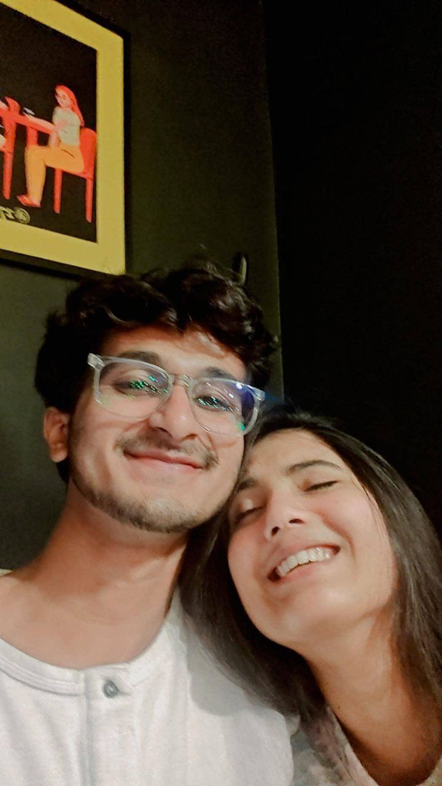

Happy Two Year Anniversary, Meri Jaaaaannn!
First of all, I Loveee youuuuuu Sooo soooo soooo sooo Much, Meri Jaaaan
today marks our two year anniversary, Haaaayyyyeeeeee do saal kaha chale
gaye maalum hi nahi pada naa? But ek cheez keh sakta hu I have been the
happiestttt I have ever been in these two years.
 7th May 2022
7th May 2022
And tune kaha tha koi physical cheeze mat laana toh
maine aapke liye ye chhota sa web page bana diya hihi
i hope tujhee massst laga hoga , mera plan toh tere
baaju mai baith ke ye page dikhane ka hai but tu jaanti
hi hai mujhe pehle naa bhej du bass hehe, khair saath mai
baithe ho aur tu ye padh rahi hogi tab masst live tere
expressions dekhungaaaaa hihiiihi.
Meri Jaaaaaan ye baaju vaala photo dekh rahi hai ? yaad
hoga hi tujhe pehli baar saath mai the aise photo bhi saath
mai pehla kitna darr darr ke liya tha, uss time roz sochte
the milne kab milega kab milega, vo din the aur ek abhi ke
din hai dates pe jaane milta hai, saath mai shopping karne
milta hai , aurrrr saaath mai vapi se ahmedabad train maii
haaaayyyyeeeeeee ye sab jo abhi ho raha hai , aurrr ab bhi
massstt baaju baaju mai baithe hai hum ye sab tab ke pranika
ke liye literally ek dream hai aurr iss dream ko reality bana ne ke liye Bappa ko Thankkk Youuuuu
Bolnaa chahiye humeee and I hope ab puri life humari aisi saaath mai hi jaaye aurr iss se bhi
achiiii hooo. Saath Saath dates pe jaate rahe , saath saath rahe massst Shaadi ke baad haaaayyeeee.
Yaaaar Shaadi ke baaad kitna massstt hoga naaa jab mann kiya hug kar lo badi si forehead kiss
dedo rona aa raha ho toh ek dusre ko mana ke hasane lagg jaao , saaath saath movies dekho , anime,
series k dramas haaayyeeee, shaadi ke baad ki life kitni massst hogii yaaaar but bachha tujhe
pata hai tujhse shaadi karne ka thought lyu aaya tha? exact date toh nahi pata naa hi time naa
hi kab but kyu aaya tha ye zarur bata sakta hu..

Sanii tu naa bessttt life partner
hai mere liye aur ye cheez mujhe
bohottt pehle realize ho gayi thi
jab ye kiss ki thi uske bhi pehle .
Humne jis din se baat karna
shuru kiya hai tabse se hum
dono ko hi pata hai what it feels
like to have a soulmate who
thinks and feels exactly like you
and understands you like no one
else does and we know that this
is the most precious thing in the
to have some one care and love for you the way you love and care for me, you motivate me when i am
down, you console me when i am sad, you always support me be it football or studies or any other
thing, you always try to make me a better person and alwayssss guide me to the right path hell you
even made me believe in god again and I ll always be grateful to you for that .
Bachha you have become the most important person in my life and i put you above anything and
everything, i can lose it all for you and win it all for you, i can kill for you and i can die for you
(ye bolne pe tu mujhpe gussa karegi hehe koi na tere baaju mai hi baitha hu flick kar dena hehe )
and I will work hard and become a capable person who you can marry and have a safe and
comfortable future with and I ll become so deserving of you that even if the whole world
wants to they wont be able to separate us.
Haaaaaayyyeeeeee humari dusri date hihi, achha vaise mai ye particular section tere traditional day
vaale din likh raha hu haa shaam ko aur tujhe yaad ho toh maine already dopeher ko kaafi kuch keh
diya but aaj vaapis kehta huu...Tu isss puri duniyaaa maii sabseeeeee zyadaaaaa khubsursat haiii
you are more beautiful than aphrodite , more beautiful than freya , more beautiful than bast, tu
toh mere liye Radha Rani se bhi zyada khubsurat hai meri Jaaaan . jab bhi tujhe dekhta hu naa
teri aankho mai kho jaata hu bass.
Teri Aankhon Ki Namkeen Mastiyan
Teri Hansi Ki Beparwaah Gustakhiyaan
Teri Zulfon Ki Leharaati Angdaiyaan
Nahi Bhulunga Main
Jab Tak Hai Jaan, Jab Tak Hai Jaan
hihi, Meri Jaaaan teri kaali ghani lambi zulfe jab khuli chhod deti hai naa saanse ruk jaati hai
meri, aur unki scent haaaaayyeeeeeee hum jab pehli baar mile the tabse jab last time mile mai ne
hamesha kaha hai ki tere baalo mai bohottt hi achhi scent aati hai and i literaally love itttt.
teri ye do pyaari pyaari doe eyes jo raat ke aasman ke sabse pyaare taaro ko bhi peeche chhod de
jinhe mai puri zindagi dekhta rahu toh bhi koi gham nahi, jab tu inn pyaari pyaari aankho se apne
dil ki baate bayan karti hai, mujhse pyaar se dekhti hai, mujhpe gussa karti hai, mujhse masti
karti hai itnaa pyaara pyaaara lagta hai , mann karta hai bass mai inhi aankho ke samundar mai
puraa duub jaau jaise aapke pyaar mai duub chuka hu. Jab yahi aankhein udaas hoti hai, inme aansu
aa jaate hai it literaally breaks my heart aur jab vo meri vajah se ua ho i literally hate myself
then , bachha I cant see you crying or hurt aur isiliye I try to live up to that to not hurt you
to not make you cry and to always make you laugh again
maine jab pehli baar tujhe dekha thaa naa , maine sabse pehle teri aankho ko dekha tha aur vo lamha
mujhe pura vividly yaad hai how your eyes were darting around as if curious about something aur vo
tirchi nazar aaaayyyeeee haaaayyyeeee uss din teri aankho ne mere dil ko 7 janmo ke liye kaid kar
liya thaaaaa.
tera cute sa little nose haaayyeeee aur uspe vo chhoti si slit mujheee itnaaa zyadaaa psand hai naaa
kyaaa batauuu basss mann karta rehta hai use touch karta rahu and i literallly hope humare babies ka
nose bhiiii sameeee hoooo , mann karta hai bass aise randomly chhoti chhoti kisses du , cuddle karte
waqt mere nose se rub karu tera nose haaayyeeee aaj bhi mauka mila toh karungaaaa.
tere pyaare pyaare cute cute gaaal basss ghantoo khelta rahuuu unseee unhe caress karu , unpe mera
palm rakh ke basss teri aankho mai dekhta rahu, unpe dherrr saari kisses duu, unhe bite karuu
aurr tere gaalo ko pinch karke khechu softly hihihihihi.
aur teri smile, jo comforting smile hai naa teri mera mann shaant ho jaata hai, bachha vo dekh kar
jo sukoon aur raahat milta hai naa ki meri saanuu safe hai , happy hai , majjee kar rahi hai hehe,
tujhse naaraz bhi hou naa toh bhi teri smile dekh kar apni control nahi kar paata hu yaar, tu naaraz
ho yaa sad ho yaa gusse mai toh jab tak tujhe smile naa karva du tab tak chain ki saans nahi aati yaar
mai literally gusse mai hou toh bhi teri ek smile se chuuuu ho jaata hai mera gusssa haaayyeeee.
Aur aakhir mai aate hai teri awaaz pe maine hamesha kaha hai aur hamesha kahunga , I fell in love
with your voice pata nahi kya but teri awaaz ke baare mai kuch toh aisa tha jiss ko sunn kar maine
socha ki yaaar ye awaaz mujhe apni puri zindagi sunn ni hai, jab tu mujhe pyaar se bukati hai ,
baby voice mai baat karti hai, mere saath masti mai baate karti hai , mujhe comfort karti hai
mujhe kuch samjhati hai , teri awaaz ka harr tone harr pitch harr minor detail mujhe itni pasand aati
hai naa teri awaaz se zyada pyaara mujhe iss duniya mai kuch bhi nahiiiii.

Meri jaaaan last mai bass itna kehna hai ki ,
The way you love me unconditionally no matter what.
The way you support me in everything.
The way you care for me in every situation.
The way you alwayysss guide me.
The way you compromise for me.
The way you alwaysss guide me.
The way you always stand by my side.
The way you take pride in me.
I ll always reciprocate these feelings and give my best for
you , i ll always stand by your side, care for you and
most of all respect you and give you a reason to always
trust me. I ll be your something peramanent.
Scroll Down to See....
A Surpriseeeeeeee